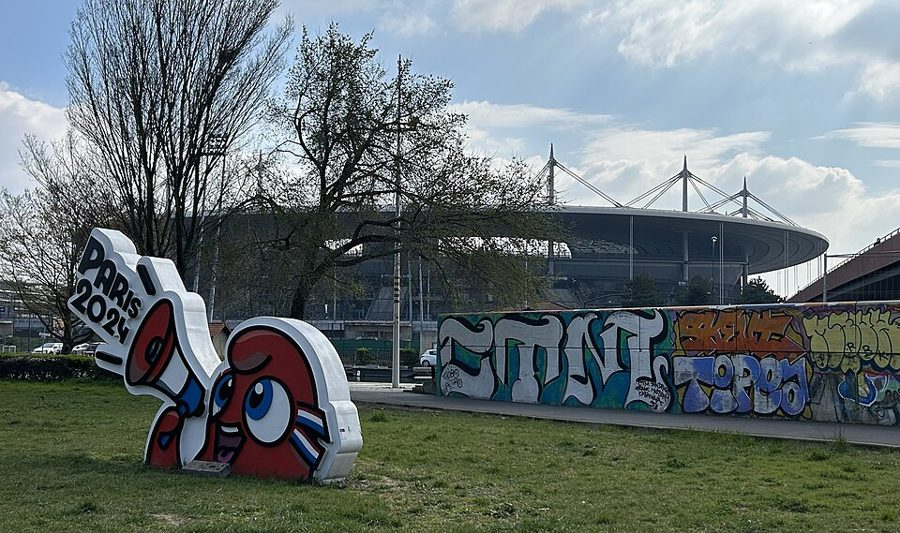
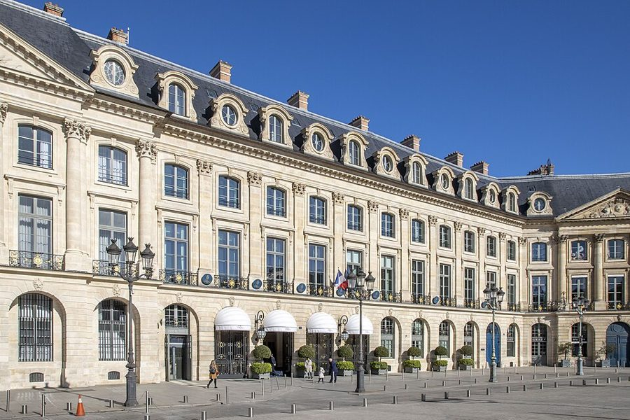
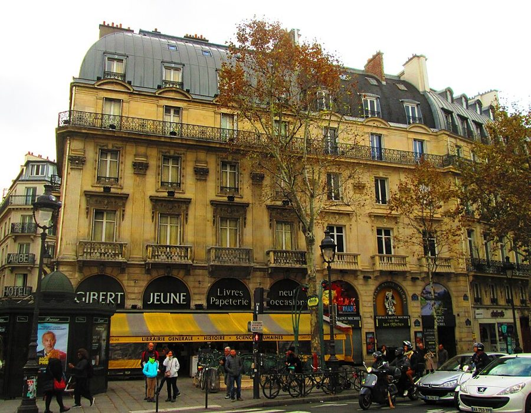
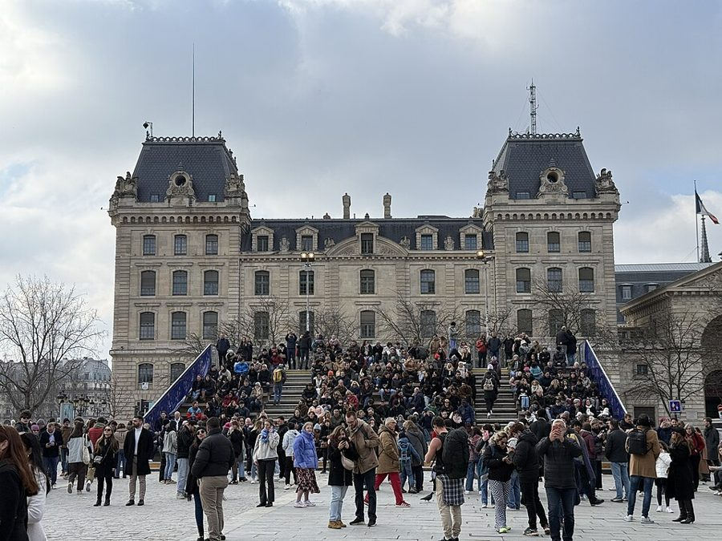

这一篇在做什么
1995 年冬天到 1996 年春天，作者一家来巴黎不到一年。作者想找个地方锻炼，加入了一家号称「纽约式」的新健身房，四个月里几乎没练成。全篇在两条线之间跳：一条是这家健身房的连续喜剧，推销、派对、面谈、毛巾；一条是作者对法国人和运动的观察，从新体育场起名，到女性杂志，到男人之间聊什么。读的时候留意 §2 里两次说到「代替」，再看最后一节怎样把两条线拴在一起。

法兰西体育场（Stade de France），2025 年 3 月从圣但尼的船闸花园看过去。§1 开头笑话的就是这座体育场的名字，那时它还在施工。Chris93，CC BY 4.0，维基共享资源 读之前：这篇的来历
开头说体育场是「去年年底」定的名，那是 1995 年 12 月；这一篇刊在 1996 年 5 月 27 日那期《纽约客》上，栏目是「巴黎札记」（Paris Journal），篇名和书里一样。一家人这时来巴黎不到一年，儿子 Luke 一岁多。它是第二部分「远方的错误」的第一篇，前面是第 4 篇、第一个圣诞的日记，后面的第 6 篇写一个很冷的冬天和法国人的经济焦虑。「红色军团」（Régiment Rouge）是作者给这家健身房起的化名，书里明说了。到第 22 篇，一家人去丽兹酒店的泳池游泳时，作者还会提起这段经历。
运动在法国人的日常生活里是什么位置？如果法国人不靠运动来出汗、来找话题，那他们靠什么？
读的时候带着这几个问题。不用先找答案，读完回来对照「检查一下理解」。
新体育场叫「法兰西体育场」，作者为什么觉得这个名字底下藏着讥讽？§1
推销员听说有人想一周来三四次，是什么反应？这说明她怎么看健身？§1
作者说法国人用什么代替聊球赛、用什么代替健身。这是认真的观察、是玩笑，还是两样都有？§2
最后一节的体检和健身卡，跟前面三节怎么接上？§4
这一篇的路线
全篇四节，走法像一堂健身课：拿体育场起名热身，接着是健身房的连续喜剧；§2 突然停下来，拉远讲法国人和运动；§3 回到健身房；§4 换了地方，到了警察局。读译本时，§1 到 §2 那一跳最容易读丢：作者不是离题，是在给前面的笑话找解释。§2 最后一段把部委比作健身器，那是给 §4 埋的伏笔。下面这张图把两条线摊开。
健身房
法国人与运动
§1
§2
§3
§4
体育场起名
丽兹泳池
一周一次
松露和可丽饼
面谈
乳液和电击
聊部长
部委和器械
没有毛巾
居留证 健身卡
本站示意图。橙点是健身房这条线，蓝点是作者对法国人和运动的观察，绿点是两条线交汇的地方；折线是阅读顺序，虚线是原书的分隔。 作者落在哪： 作者认为，围绕运动的那一整套说辞和崇拜在法国日常里缺席，是法美两地日常生活最大的不同。他半开玩笑地说，法国男人拿议论部长代替聊球赛，法国人拿跟各部委周旋代替健身。结尾两条线合在一起：健身房的会员卡，到头来只对档案有用。
分节地图
原书这一篇有三处分隔，分成四节。每一节的粗体是读译本时认得出的场面；下面的斜体是英文这一节开头的几个词，打开电子书搜它就能跳到那里。读完一节打个勾。
体育场起名，丽兹泳池，红衣女郎的健身房约 1300 词 Late last year the French government … 先定调子：形式上热情，骨子里不当真。留意健身房里的每件事怎样被推到「下次」。 减肥乳液，不聊球赛聊部长约 800 词 While all this was going on, … 唯一离开健身房的一节，作者在这里下判断；最后一段给结尾埋伏笔。 骑车二十四分钟，没有毛巾约 300 词 A few days after my oral … 作者终于练了一次。留意前台那句话的口气。 警察局，居留证差一次体检约 100 词 A couple of days later I … 最短的一节，把健身房和官僚两条线拴在一起。
背景：作者默认你知道的事
按在书里出现的顺序排，标题前是节号。
§1 法兰西体育场和它的名字1998 年世界杯由法国主办，主体育场建在巴黎北郊的圣但尼（Saint-Denis），施工时一般叫「大球场」（Grand Stade）。书里说候选的名字有诗人魏尔伦（Verlaine）、写《小王子》的圣埃克苏佩里（Saint-Exupéry），还有很多人想叫「普拉蒂尼球场」。书里说，1995 年 12 月在电视上公布的名字就是「法兰西体育场」。当时的青年和体育部长是 Guy Drut，1976 年蒙特利尔奥运会的 110 米栏冠军，书里没有点他的名。
普拉蒂尼 Michel Platini 法国足球史上最有名的球员之一，1983–1985 年连得三届欧洲金球奖，当时是 1998 年世界杯组委会的联合主席。§1 只提了他的名字。
§1 辛普森案的宣判O. J. Simpson 是美国橄榄球明星，1994 年被控杀害前妻和她的一位朋友。刑事审判持续了大半年，电视全程直播，1995 年 10 月 3 日宣判无罪，很多美国人停下手里的事守着电视，看陪审员入座、等裁决宣读。作者拿这个场面比体育场命名，笑的是一个名字的公布被弄得像世纪审判一样郑重其事。
§1 丽兹酒店和奥斯曼式楼房丽兹酒店（Hôtel Ritz）在旺多姆广场（Place Vendôme），1898 年开业，是巴黎最有名的豪华酒店之一，酒店里有游泳池和健身俱乐部。有人建议作者去那里，作者说那大概是最「法国」的健身房了；去试的那天，泳池边的人都吊着腿在吃下午茶三明治。「红色军团」所在的楼是奥斯曼时代的建筑：1853–1870 年，塞纳省省长奥斯曼（Haussmann）大规模改造巴黎，沿新开的大道盖起统一规格的石头公寓楼，今天巴黎街景的主体就是它们。作者说那栋楼看上去像机关。

旺多姆广场上的丽兹酒店，2022 年。Arthur Weidmann，CC BY-SA 4.0，维基共享资源 
圣米歇尔广场边的一栋奥斯曼式公寓楼，2018 年。和书里的健身房无关，只是让你看看这种楼的样子：石头立面、铁艺阳台、灰色屋顶，底层开店。Beyond My Ken，CC BY-SA 4.0，维基共享资源 §1 Nautilus 健身器和 Mamet 的「成交手」Nautilus 是美国的健身器械品牌，1970 年代初由 Arthur Jones 推出，用凸轮让阻力随动作变化，八十年代风行美国的健身房。这一点 §2 要用到：作者拿它比法国的部委。Mamet 是美国剧作家，1984 年获普利策戏剧奖的剧本 Glengarry Glen Ross 写一群地产推销员，closer 是能让客户签单的那个人，也指一锤定音的那一招。书里还有一笔账：两千法郎合四百美元，即一美元约合五法郎。
§2 几份报刊：《队报》《世界报》《解放报》和 Self《队报》（L’Équipe）是法国的全国性体育日报，1946 年创刊。《世界报》（Le Monde）和《解放报》（Libération）是巴黎两份主要的综合日报，后者 1973 年创刊，萨特参与创办，立场偏左。书里说《世界报》给体育一两页，《解放报》也多不了几页。Self 是美国的女性健身杂志，1979 年创刊；作者说《你的美丽》（Votre Beauté）是「法国的 Self」，可这本法国杂志的减肥特刊里，健身操图解只有夹在后面的一页。
§2 足球：一支巴黎球队，两个在英格兰踢球的法国人书里说巴黎只有一支好球队，指的是巴黎圣日耳曼（Paris Saint-Germain，PSG），伦敦一城就有六支。书里点名的两位法国球星当时都在英格兰：坎通纳（Eric Cantona）在曼联，吉诺拉（David Ginola）1995 年夏天从 PSG 转会纽卡斯尔。书里拿美国篮球的「Magic 对 Michael」作比：魔术师约翰逊（Magic Johnson）和乔丹（Michael Jordan），两人在 1991 年的 NBA 总决赛交手，是那个年代美国体育最有看头的对决。
坎通纳 Eric Cantona 法国前锋，1992 年起效力曼联，是英超最出名的球星之一。§2 说他和吉诺拉的对决才是法国最像「Magic 对 Michael」的东西，可惜发生在英吉利海峡那一边。
吉诺拉 David Ginola 法国边锋，1995 年从巴黎圣日耳曼转会纽卡斯尔。§2 引了他向《队报》表白的爱国话，作者觉得有点勉强。
§2 八点新闻和纽约人的球队纽约尼克斯（Knicks）是 NBA 球队，纽约大都会（Mets）是职业棒球队；救援投手（relief pitcher）是比赛后半段上来救火的投手，救砸了最让球迷摇头。书里说美国男人冷场时问一句「昨晚看尼克斯了吗」就能接上话，法国男人问的是「昨晚八点看到莱奥塔尔了吗」。法国电视的晚间新闻在八点，书里特地在括号里交代了。
莱奥塔尔 François Léotard 法国中右翼政治人物，1993–1995 年任国防部长，1995 年总统选举支持巴拉迪尔（Édouard Balladur），希拉克（Jacques Chirac）当选后离开政府，1996 年 3 月起任法国民主联盟（UDF）主席。书里只拿他当男人闲谈的话题。
§2 西岱岛上的警察总局和居留证巴黎警察总局（Préfecture de Police）在西岱岛上，和圣母院隔着广场相望。它管的不只是治安：在巴黎长住的外国人，当年要到这里办居留证（carte de séjour）。§2 说巴黎人从西岱岛上的政府大楼出来，像纽约人练完一样浑身酸痛、心花怒放；§4 作者就在这里办证。他那一趟牵涉四个部委，拖了三个月，最后一关是体检。

巴黎警察总局的大楼，2025 年。Chabe01，CC BY-SA 4.0，维基共享资源 §3 约翰逊博士的词典Samuel Johnson 1755 年出版《英语词典》，基本靠一人编成，此后一百多年里是最权威的英语词典。里面有些释义出了名地绕，最常被举的例子是 network：「任何网状或交叉成格的东西，各交点之间等距，中间留有空隙」。作者在健身房描述毛巾，故意学这种把简单东西说得很复杂的腔调。
词与短语
只收中文译文多半传不出原味的地方：熟词生义、反话和挖苦、典故、夹在英文里的法文。读译本读到觉得别扭、不知道作者在说什么时，来这里找那一节的；斜体小字是原句里的几个英文词，在电子书里搜它就能找到原文。
§1 体育场起名，丽兹泳池，红衣女郎的健身房
artiste
… an actor, an “artiste,” some functionaries …
一位「艺术家」
演员就叫演员，这一位却加了引号。作者在笑：说不清是干什么的，只好称「艺术家」。这个委员会的组成本身就是个笑话。
long, dramatic pause
… would be called (long, dramatic pause) Le …
（长长的、戏剧性的停顿）
像剧本里的舞台提示。前面刚拿辛普森案宣判作比，这里把悬念吊足，揭晓的却是最平淡的一个名字。
derisory minimalism
… an undercurrent of ironic, derisory minimalism.
带着讥讽的极简
derisory 是「嘲弄的」，也有「少得可笑」的意思。名字庄重爱国，底下是一种「我们才不费这个心思」的冷淡。全篇的调子从这里定下。
formally enthusiastic
… are prepared to be formally enthusiastic about …
在形式上表示热情
formally 不是「正式地」，是「走形式地、面子上」。后半句 not going to get carried away 接着说：不会真的为之着迷。
came home to me
This realization first came home to me
我第一次真切地体会到
come home to someone 是「让人真正明白、切身感到」，和回家无关。
about as French as a gym could get
… was about as French as a gym …
再法国不过的健身房
反着读：最「法国」的健身房是豪华酒店，客人泡在泳池边吃三明治，根本没人锻炼。
Régiment Rouge
… gym, which I’ll call the Régiment Rouge.
（法文）红色军团
作者起的化名。regiment 是军队的「团」，又和 regimen（锻炼计划）只差一个字母，后面 regimental、regimen room、a wearing regimen 一路在这两个词之间打转。
the virtuous sounds of Activity
… surrounded by the virtuous sounds of Activity …
一片「干劲十足」的声响
大写的 Activity 和 virtuous（有德行的）都是反话：听着热火朝天，其实是装修的锯子和锤子，健身房还没建好。
bruit
The bruit seemed to be rising …
喧闹声
英文里有这个很少用的旧词（喧闹、传闻），和法文的 bruit（噪音）同源。原文没有标成法文斜体，但放在一串法文词中间，读起来带着法文味。
abonner
… told them that we wanted to abonner …
（法文）订购、办会员
作者用法文动词，再在破折号里译成 subscribe。订报纸、订杂志、办年卡都用这个词，后面推销员又说了一次。
regimental
… its toughness, its regimental quality.
军团般的
原文斜体，推销员在玩自家店名：纽约健身房的「军营」作风。读下去就知道，这家店一点也不 regimental。
très New Yorkais
… just à l’américaine but très New Yorkais.
（法文）不光是美式，而且非常纽约
à l’américaine 是「美国式的」，très New Yorkais 是「很纽约」。推销员的法文里，纽约比美国更高一级，是时髦的招牌。
as often as once a week
… gym as often as once a week.
最多可以一周来一次
as often as 本来用来强调「多」，这里配上 once a week，这就是那个「高强度」套餐。前面的 inexorable（不可动摇的）commitment 也是同一个反话。
the closer, in Mamet language
… the winner—the closer, in Mamet language …
用 Mamet 的话说，是「成交的那一招」
典故见「背景」。推销员把一周一次当压轴卖点，以为这已经是最打动人的承诺。
forme
… when it came to forme, once a week …
（法文）身体状态
法语 être en forme 是「状态好、身体好」。作者故意让这个词在英文里反复出现，后面还有 an infinity of forme、get en forme。
going overboard
… once a week might be going overboard
做过头了
go overboard 本是从船上掉下去，引申为「过分、走极端」。推销员准备了一百套话说服嫌一周一次太多的人。
a wearing regimen
That must be a wearing regimen
那一定很累人
wearing 是「使人疲惫的」，不是「穿着的」。regimen 又一次和店名呼应。推销员客客气气，听上去像在同情纽约人。
an infinity of forme
… a price for an infinity of forme.
无限次的健身
推销员把「想来几次来几次」理解成「无限次」，作者就顺着用 infinity 这个数学大词，好像在买无穷大。
improvised prices
… improvised prices being one of the
临时现编的价钱
后面说这是巴黎生活「难以预料的乐趣之一」，半是反话：价钱是商量着当场定的，结果无限次只比一周一次贵一点。
on an emergency basis
… week long, on an emergency basis …
作为应急措施
大词小用：器械没装好，只好先上课，被说得像救灾。
Tout Biologique
Tout Biologique! a sign alongside them proclaims virtuously.
（法文）全部有机
biologique 在法文里指有机食品。括号里这段闲笔说的是一家健康食品店卖自家的巧克力和香槟，标榜全有机。和健身房送松露是一个笑话：在巴黎，「健康」也可以是吃喝。
I ate one
proclaims virtuously.) I ate one.
我吃了一颗
轻描淡写的收尾。来健身的人收下一袋巧克力，还吃了一颗：作者也被拉进了这套法国逻辑。
crème de marrons
… have apricot jam and crème de marrons …
（法文）栗子酱
法国常见的甜栗子泥，配可丽饼吃。健身房的开张仪式是一场甜食派对。
pristine, shiny, untouched
… admiring the pristine, shiny, untouched Nautilus machines …
崭新锃亮、没人碰过的
三个形容词一个比一个狠，最后的 untouched 点题：大家围着器械欣赏，像在逛展览，没人上去练。
professeur
… one have a rendezvous with a professeur.
（法文）老师、教练
法文里教练、中学老师都叫 professeur，英文读者看到会联想到「教授」，作者正要这种郑重其事的效果。rendezvous 在法文里就是「约见」，英文里却常带约会的意味，下一条就用上了。
your body and its desires
… we review your body and its desires
你的身体和它的愿望
教练指的是健身目标，desires 在英文里却很容易听成「欲望」。作者紧接着说，自己脸红没红不好说，对方肯定没有。
§2 减肥乳液，不聊球赛聊部长
rhetoric and cult
… the whole rhetoric and cult of sports …
那一整套说辞和崇拜
rhetoric 不只是修辞，是一整套话语；cult 是崇拜，带宗教味。作者说法国缺的不是运动本身，是美国那种把运动当信仰来谈的风气。
solved by lotions
… all problems can be solved by lotions.
抹乳液就能解决
平平的一句陈述，其实是挖苦：美国人去流汗，法国人去药房。
Fesse-Uplift
… startlingly erotic ad for the Fesse-Uplift …
「提臀」电击器
fesse 是法文的「屁股」，后面接英文 Uplift，法英混搭的商品名本身就好笑。
not un-pleasing
… small, not un-pleasing shocks administered to …
并非不舒服的
双重否定的委婉说法，出自广告词。拐着弯说「挺舒服」，和前面的 startlingly erotic 呼应。
the Self of France
Votre Beauté, the Self of France
法国的 Self
「X 是法国的 Y」是美国杂志写作的套话，用美国读者熟悉的东西作参照。Self 见「背景」。
If all else fails
… workout diagrams. If all else fails.
实在不行，再说
单独成句的冷笑话：乳液、电击、药片、被动运动都试过了，最后才轮到动一动。
lingua franca
… sports as a lingua franca meant to …
通用语
原指不同语言的人之间用来沟通的共同语。在美国，体育是陌生男人之间人人能说的话题。
pick up the slack
meant to pick up the slack in
填补空当
slack 是绳子松垮的部分，pick up the slack 是「把松的收紧」，引申为补上别人留下的空缺。这里指男人之间说不下去时拿体育救场。
See the Knicks last night?
… a hearty “See the Knicks last night?” …
昨晚看尼克斯了吗？
省掉主语的口语问法，美国男人之间最常见的开场白。尼克斯见「背景」。
air of pathos
… slightly disreputable air of pathos.
有点可怜的样子
pathos 是让人心生怜悯的东西，不是「激情」。在法国，迷体育像迷集邮，带点上不了台面的可怜相。
low church
… here it is still low church.
（只是）低教会
low church 原指英国国教里不重仪式、偏平民的一派。作者用宗教打比方：体育在美国是人人去的「共同的教会」，在法国还是小众的、地位低的一派。
Magic-Michael showdown
… nearest thing to a Magic-Michael showdown in France
魔术师对乔丹那样的对决
见「背景」。只写名字不写姓，美国读者都知道是谁。
affrontements
… is the affrontements of the French-born players …
（法文）对决、交锋
法国体育报道的用词，作者照搬，带着点戏谑：最精彩的「法国对决」发生在英格兰北部。
dunned
… are regularly dunned by L’Équipe to declare …
一再被逼着
dun 原义是催债。《队报》像讨债一样，隔三差五要两位球星表态爱国。
balcon
… the petite blonde with the immense balcon …
（法文）胸脯
balcon 字面是阳台，法文俚语指女人丰满的胸部；mon vieux 是「老兄」。作者在模仿传说中法国男人的闲聊，接着就说其实他们不这么聊。
the price of a Y chromosome
… the price of a Y chromosome …
身为男人的代价
Y 染色体决定男性。男人之间那种暗暗较劲的冷场，被说成生来就得付的账。
the eight o’clock
Léotard on the eight o’clock last night
八点新闻
省掉了 news，作者马上在括号里补一句：这里的新闻在八点。莱奥塔尔见「背景」。
beyond pathetic
… for Mets relief pitchers: beyond pathetic.
可悲到无以复加
beyond 加形容词是美国口语，「已经超出了 XX 的程度」。原文斜体，读的时候要带着摇头的语气。
takes you out of yourself
… time-consuming, takes you out of yourself …
让你暂时忘掉自己
英文里常用来说一件事能让人散心、不再只想着自己。这一串描述原本像在说健身，作者一样一样套到跟部委打交道上。
total mental failure
… the moment of total mental failure.
精神彻底垮掉
力量训练里说「练到 failure」，是练到肌肉再也推不动为止。作者换成 mental：部委要把你的精神推到力竭，才肯放行。
§3 骑车二十四分钟，没有毛巾
full New York regalia
… I was in full New York regalia …
一身纽约式全副行头
regalia 原指王冠、权杖这类王权标志，大词小用：运动裤、头带、随身听，被说得像加冕礼服。
barely fast enough to sustain life
… barely fast enough to sustain life …
慢得刚够维持生命
夸张。旁边那位骑车的人蹬得像在保持心跳，后面那位女士走跑步机的速度是逛街的速度。
Saunter
… had set the machine at “Saunter.”
「闲逛」档
saunter 是悠闲地溜达。跑步机当然没有这一档，作者替她编了一个。
break a sweat
… to break a sweat at a gym.
出一身汗
口语里常是「费点力气」的意思，这里用的是字面：在左岸的健身房里出汗的第一人。这份自豪是自嘲。
opaque look
… a long, steady, opaque look.
读不出意思的眼神
opaque 是不透明，用在眼神上，是看不出对方在想什么。作者以为自己说错了词。
Dr. Johnson’s dictionary
… like a definition from Dr. Johnson’s dictionary
约翰逊博士的词典
典故见「背景」。作者对毛巾的描述绕成一句词典释义。
is envisaged
she said at last, “is envisaged.”
（这）已在设想之中
envisage 是书面词，「设想、预计」，像公文和计划书里的话。用在毛巾上，意思是：现在没有，计划里有。
moist as a chocolate mousse
… home, moist as a chocolate mousse.
湿得像一份巧克力慕斯
比喻又回到吃的上：这家健身房送松露、办可丽饼派对，作者练完一身汗，也成了一道甜点。
§4 警察局，居留证差一次体检
carte de séjour
… Police to get my carte de séjour …
（法文）居留证
外国人在法国长住的证件。见「背景」。
four-ministry workout
… involved a four-ministry workout stretching over …
四个部委的一整套锻炼
workout 接着 §2 的比方：办证就是健身，跑了四个部委，练了三个月。
Alors, monsieur
“Alors, monsieur,” she said, “you
（法文）那么，先生
alors 是法国人开口时常用的「那么、这样的话」，后面多半没好事。
I couldn’t argue with that
I couldn’t argue with that.
我没法反驳
全篇最后一句，轻描淡写。健身卡对锻炼没用，对档案有用：作者认了。
后来
这一篇刊出时是 1996 年 5 月，体育场还在施工。下面接着讲书里的体育场和那支巴黎球队后来怎样。每条都写了核对日期，这类内容过一两年就会变。
法兰西体育场：世界杯决赛和奥运会
体育场 1998 年 1 月 28 日启用，第一场是法国对西班牙，齐达内（Zinedine Zidane）打进了比赛唯一的进球。同年 7 月 12 日，世界杯决赛在这里举行，法国 3 比 0 赢巴西，第一次拿到世界杯（第 16 篇写的就是这届世界杯）。2024 年巴黎奥运会，田径比赛在这里进行。核对于 2026-10。依据：维基百科「Stade de France」条目，StadiumDB，Time Out Paris，《爱尔兰时报》1998-01-29 的报道。
巴黎圣日耳曼：从没人挂旗到欧洲冠军
书里说在圣日耳曼走一圈，看不出巴黎有这支球队。2011 年，卡塔尔体育投资公司（QSI）买下巴黎圣日耳曼七成股份，2012 年买下其余部分，此后不断花大钱引进球星。2025 年 5 月 31 日，巴黎圣日耳曼在慕尼黑以 5 比 0 赢国际米兰，第一次拿到欧洲冠军联赛冠军，同一季还拿了法甲和法国杯。核对于 2026-10。依据：City A.M.，Ahram Online（法新社），Sports Illustrated，欧足联官网和美联社 2025-05-31 的报道。
值得停下来的句子
you can’t do anything in France without having a dossier opened on your behalf.— §1，推销员给作者夫妇报价那一段的末尾。本站译：在法国，你做什么都得有人替你开一份档案。
on your behalf 字面是「为了你、代表你」，听上去像一项服务，其实档案是机关的，你只是被记录的人。句子是被动态，谁开的档案不说，正是法国官僚那种无名无姓的感觉。can’t do anything 是作者的夸张。这句话看似顺口一提，到 §4 兑现：最后连健身卡也被收进了档案。中文译出意思不难，丢掉的是 on your behalf 那一点客气的反讽。
Every French ministry is, like a Nautilus machine, thoughtfully designed to provide maximum possible resistance to your efforts …— §2 最后一段。本站译：法国的每个部委都像一台 Nautilus 健身器，经过周到的设计，专门给你的努力提供最大可能的阻力……
关键在 resistance：在健身器上是阻力，在机关里是阻挠，一个词两头都说得通，中文只能保住一头。thoughtfully designed 是反话，把刁难说成体贴。句子后半接着说，它总在你精神彻底垮掉的那一刻才让步，借的是力量训练「练到力竭」的说法。整篇的「运动」比方，在这一句里最完整。
检查一下理解
先在心里答，再点开。答错的那题，回书里把对应那一节再读一遍。
1.（§1）「法兰西体育场」这个名字，作者从里面读出了什么？ 表面上庄重爱国，底下有一层带着讥讽的极简。作者由此说，法国人愿意在形式上欢迎美式体育场和美式运动，但不会真的为之着迷。
2.（§1）推销员听说纽约人一周去三四次健身房、甚至早饭前去，是什么反应？ 她准备了很多说辞对付嫌一周一次太多的人，对嫌太少的人毫无准备。她小心地复述、客气地说那一定很累，最后才弄明白对方要「无限次」，现编出来的价钱只比一周一次贵一点。
3.（§1）健身房一拖再拖，店里是怎么安抚会员的？好笑在哪？ 送一袋巧克力松露，开一场可丽饼派对，再安排一次只谈不练的面谈。补偿全是吃的和说的，崭新的器械摆着让大家欣赏，没人上去练。
4.（§2）法国女性杂志和美国的一样在意身材，差别在哪？ 法国杂志相信问题都能靠乳液、电击、药片和「被动运动」解决。那期减肥特刊里，健身操图解只有夹在征友广告中间的一页，像是万不得已的办法。
5.（§2）法国男人冷场时拿什么话题救场？作者为什么说口气和美国人聊球赛几乎一样？ 聊政府，尤其是哪位部长最自以为是、最无能，比谁更差就像比赛。说起来摇头、半笑不笑，和纽约男人说起大都会队的救援投手一个样。
6.（§2 §4）作者为什么说跟官僚打交道代替了健身？最后一节怎样把这个说法落到实处？ 作者把部委比作健身器：专门给你的努力制造阻力，熬过去之后反倒有一种练完的畅快，这是半开玩笑的比方。§4 居留证差最后一关体检，作者只好拿出健身卡，办事员说这对档案有用：健身房没练成，倒给官僚流程添了一页。
7.（§3）前台说毛巾「已在设想中」，这句话为什么好笑？ 本站的理解：这家健身房的一切都停留在计划里，更衣室和器械一直是「下个月」，用器械前要先面谈，现在毛巾也一样。作者没有点破，只写自己愣住、明白过来，然后一身湿走回了家。
用一句话说这一篇，写给一个没读过的人。
精彩回顾
读过又忘了，从这里想起来。挑的是这一篇最值得记住的场面和说法，不按原书顺序；每条后面是节号，想细看就回书里那一节。全书各篇的这一节都收在全书回顾 。
一句话： 作者在巴黎找「纽约式」健身房，四个月没练成；他发现法国人不靠运动出汗、找话题，他们的运动是跟官僚周旋。
部委就是健身器 法国人不用去健身房，跟部委周旋就够了：费时，有点疼，挤在陌生人中间，最后一阵畅快。每个部委都像健身器，专门给你阻力。
§2 一周一次的「高强度」 推销员主推的高强度套餐是一周最多来一次。作者说想一周来三四次，她小心地问了半天，才现编出「无限次」的价钱，只贵一点点。
§1 毛巾「已在设想中」 作者终于骑了二十四分钟车，大汗淋漓，向前台要毛巾。回答是还没有，这已在设想中。他像一份巧克力慕斯一样湿着走回了家。
§3 法兰西体育场 新体育场的名字揭晓得像辛普森案宣判，悬念吊足，答案却是最平淡的一个。作者从这个名字里听出一层讥讽：热情是面子上的。
§1 不聊球赛聊部长 美国男人冷场时聊昨晚的球赛，法国男人聊昨晚八点新闻上的政客，摇头、苦笑，口气和纽约人说起大都会队的救援投手一模一样。
§2 健身卡进了档案 居留证眼看到手，办事员发现还差一次体检。作者掏出健身卡，她说这对你的档案有用。
§4